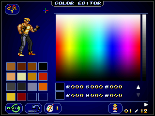

PALETTE EDITOR

A mouse is required to use the palette editor.
4 default palettes are included: 64 colors, 256 colors, color gradients and 16 bit. They can be switched by clicking on the up/down arrows
EDITOR DE PALETAS
Se necesita un ratón para utilizar el editor de paletas.
Se incluyen 4 paletas por defecto: 64 colores, 256 colores, escala de colores y 16 bits. Se cambian pulsando las flechas arriba/abajo
41